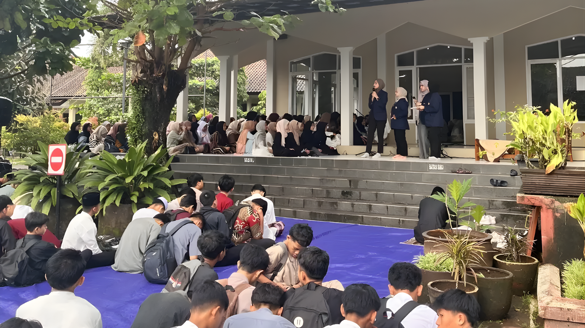
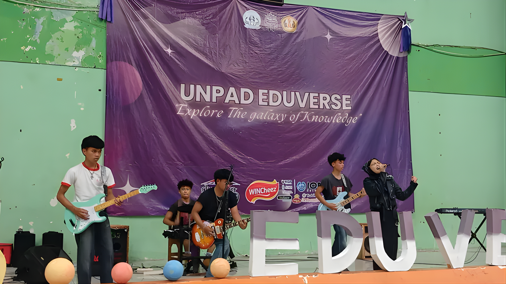

The Legacy & The Revival
PKMT Goes to School (PGS) has long been a mandatory flagship event. While the core roadshow segment had been consistently executed for over a decade, the Main Event (Grand Closing) had been completely discontinued since 2020. Taking on the role of Project Officer for the 2025 period, my mandate was ambitious: sustain the massive roadshow legacy while fully resurrecting the Grand Closing from a 5-year hiatus.
Making this happen required extreme financial engineering—accelerating a typical 3-month fundraising timeline into just 3 weeks to successfully secure IDR 10 Million in sponsorships.
Phase 1: The Roadshow Marathon
The first phase of execution was a logistical marathon. From January 15 to the end of January 2025, my team and I executed an aggressive roadshow campaign across the Tasikmalaya region. We didn't just coordinate with a few institutions; we managed concurrent schedules, presentations, and direct engagements across 25 different high schools.

On the ground: Direct engagement and presentations with high school students during our 25-school roadshow marathon.
Phase 2: Unpad Eduverse (The Grand Closing)
The climax of PGS 2025 took place on February 1, 2025. After a 5-year absence, we successfully brought the Main Event back to life under the name "Unpad Eduverse". We secured the prestigious Gelora Sukapura Dadaha in Tasikmalaya as our venue.
This wasn't just a simple closing ceremony; it was a full-scale educational festival. I oversaw the execution of multiple high-stakes segments running simultaneously, including:
- Academic & Creative Competitions: Executing LCC (Lomba Cerdas Cermat) alongside high-energy Music and Poster competitions.
- Faculty Exhibitions: Managing representative booths from all Unpad faculties to provide direct insights to prospective students.
- Entertainment & Culture: Orchestrating a Faculty Parade and closing the event with special Guest Star performances, blending education with modern entertainment.

The revival: Finalists of the music competition performing on the main stage at Unpad Eduverse, Gelora Sukapura Dadaha.
Press & Media Coverage
The revival of Unpad Eduverse and the massive scale of the roadshow didn't go unnoticed. Our success was officially covered by external local media.